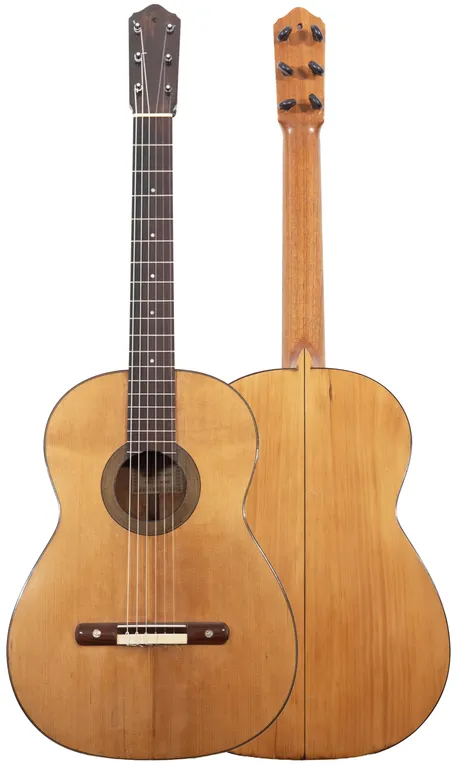
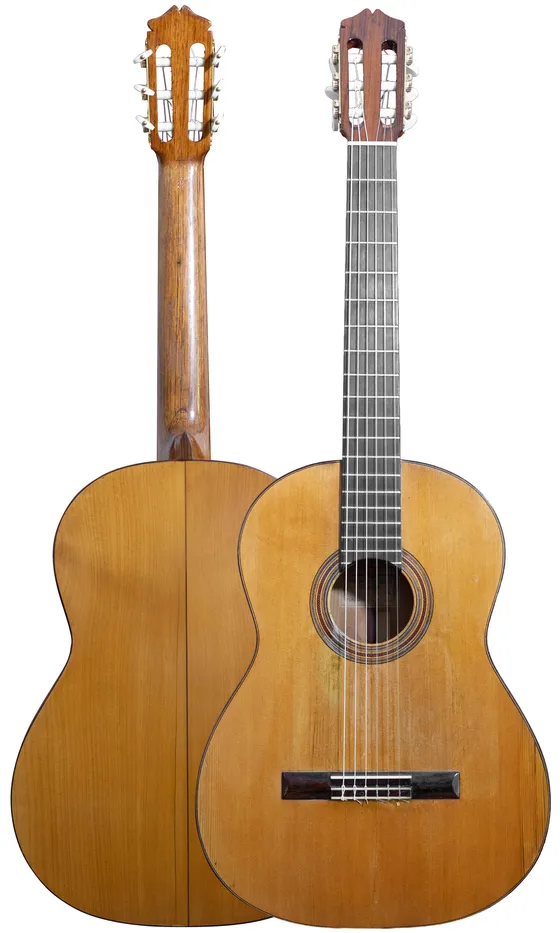
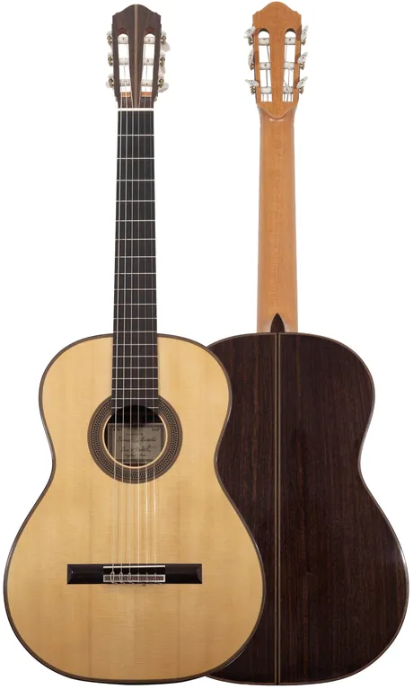
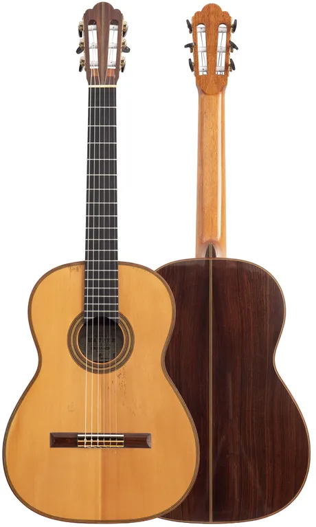
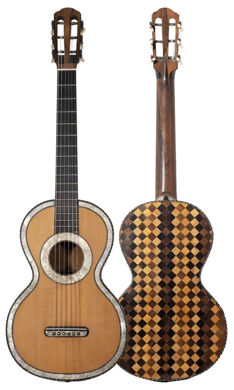
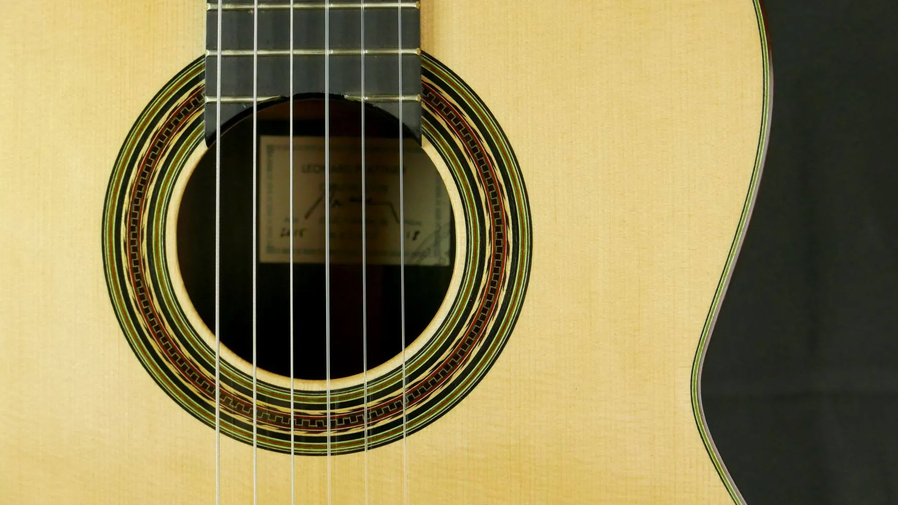
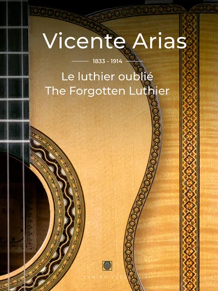
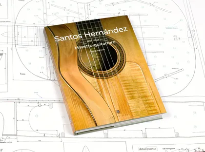
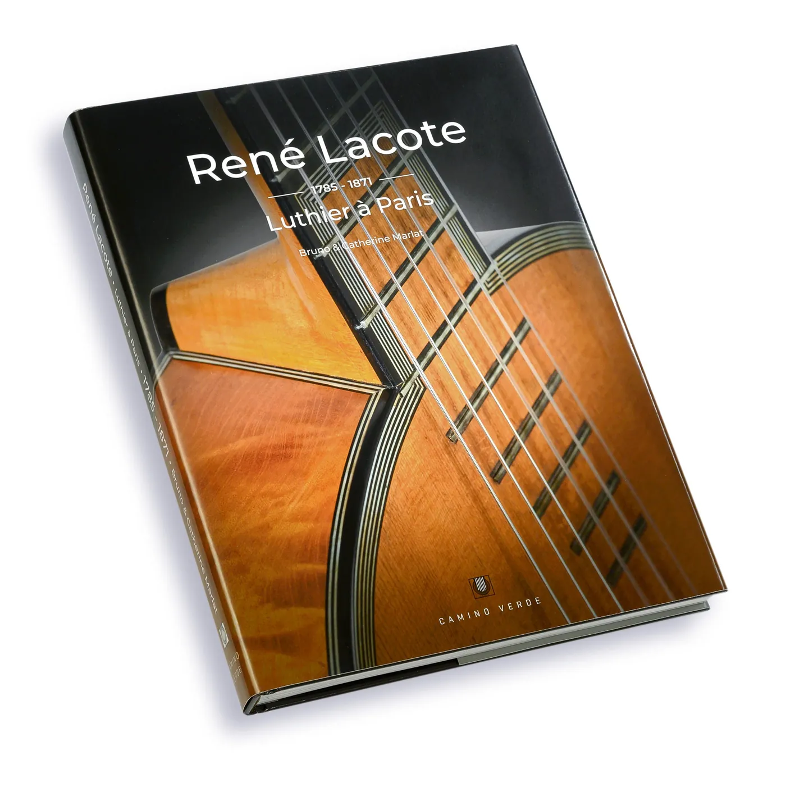

Guitare de concert
Magasin et atelier de lutherie à Genève depuis 1979, spécialisé dans la restauration d’instruments anciens.

Guitares de concert et guitares romantiques. Prix sur demande, par téléphone ou par courriel.




Toutes les guitares de concertGuitares romantiquesGuitares d’étude
À trois, nous évaluons, réfléchissons et étudions chaque instrument afin d’intervenir de la manière la plus adaptée et pertinente.
Nous travaillons toujours en respectant les méthodes de construction propres aux instruments ainsi que les matériaux originaux (bois, colles, vernis), dans un esprit de réversibilité.

Au cours des dernières années, nous sommes intervenus sur des instruments de :
Et bien d’autres, des guitares romantiques du XIXe siècle aux instruments de concert contemporains.
Des modèles Alhambra, Cuenca, Almansa et Picado, des guitares d’enfants et des ukulélés. Housses, coffres, accordeurs, cordes : tous les accessoires pour guitare.
Pour toute commande d’accessoires : info@vincenti-guitares.com



Également : « Une Guitare à Genève en 1929, J. Vincenti », 30 CHF.
Dès novembre 2026
3, sentier des Saules
1205 GenèveAprès 47 ans au boulevard Saint-Georges.
info@vincenti-guitares.com
Facebook
Les horaires du nouveau lieu seront communiqués par téléphone.